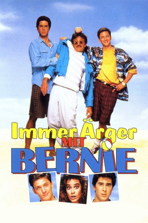
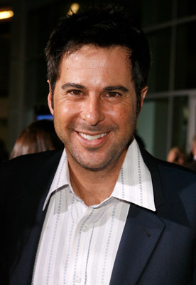
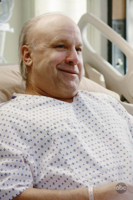

#4889 Immer Ärger mit Bernie
Alternativ: Weekend at Bernie's
 
 IMDB-Wertung: 6.3 / 10
IMDB-Wertung: 6.3 / 10  Metascore: 0
Metascore: 0 
Wie soll man ein schönes Wochendende haben, wenn einem Killer auf den Fersen sind? Das fragen sich auch zwei Versicherungsangestellte. Larry Wilson und Richard Parker machen ihren Chef Bernie Lomax auf einen Versicherungsbetrug aufmerksam. Daraufhin werden sie von ihrem Boss auf ein Wochenende in dessen Strandhaus eingeladen. Bernie bestellt Mafiakiller, die die beiden Entdecker aus dem Weg räumen sollen, doch statt dessen den Chef selbst erledigen. Als die beiden Angestellten den Toten vorfinden, beschließen sie, trotzdem ein schönes Wochenende zu verbringen, bis sie erfahren, dass auf der Liste des Killers ihre Namen stehen.
Jahr: 1989
Dauer: 99 Minuten
FSK: 16
Land: USA Studio: 20th Century FoxTonspuren: DD2.0 - ,
Untertitel:
Auflösung: 1080p (1920x1080) Größe: 7024 MB
Genre: Abenteuer, Komödie, Krimi
Regisseur: Ted Kotcheff
Drehbuch: Andrew Davies
Soundtrack:
Darsteller:
 Andrew McCarthy als Larry Wilson
Andrew McCarthy als Larry Wilson-  Jonathan Silverman als Richard Parker
- Catherine Mary Stewart als Gwen Saunders
- Terry Kiser als Bernie Lomax
 Don Calfa als Paulie, Vito's Hit Man
Don Calfa als Paulie, Vito's Hit Man Eloise DeJoria als Tawny
Eloise DeJoria als Tawny-  Louis Giambalvo als Vito
- Ted Kotcheff als Jack Parker, Richard's Dad
- Mark Kenneth Smaltz als Harris, Security Oficer
- Bruce Paul Barbour als Beach Bum
- Jason Woliner als Bratty Kid
- Steve Howard als Plastic Surgeon
 George Cheung als Lomax's Garener
George Cheung als Lomax's Garener David Hummel als Businessman , uncredited
David Hummel als Businessman , uncredited Patt Noday als Party Guest #7 , uncredited
Patt Noday als Party Guest #7 , uncredited Skeet Ulrich als Extra , uncredited
Skeet Ulrich als Extra , uncredited- Catherine Parks als Tina, Vito's Girl
- Gregory Salata als Marty, Vito's Assistant
- Margaret Hall als Lomax's Secretary
- Timothy Perez als Central Park Mugger
- Anthony Mannino als Superintendant
- Polly Segal als Woman in Elevator
- Robert L. Horen als Maitre' D
- Dan Cox als Handsome Guy
- Lorri Lindberg als Authoress
- Jack Hallett als Tennis Pro buying Bernie's Car
- John Bennes als Harvey
- Augustina Berlings als Larry's Pick-Up
- Mert Hatfield als Cop
- Jack Canon als Murray Rose
- Nello Tare als Party Man
- Joyce Leigh Bowden als Fashion Designer
 Stefanos Miltsakakis als Klaus the Body Builder
Stefanos Miltsakakis als Klaus the Body Builder- Dan Preston als Exercise Trainer
- Jean Liles als Girl on Dock
- Lisa Sherrill Gannon als 1st Beach Girl
- Rachel Lewis als 2nd Beach Girl
- Dan Wargo als Party Guest
- Patricia Roseman als Female Model
- David Arey als Male Model
- Ronald C. Ross als Man at Table
- Lou Criscuolo als First Islander
- Edward Little Dean als East Bay Water Taxi Driver
- Stephen Fischer als Man on Elevator
- Cindy Foster Jones als Girl at Ambulance
- Richard W. Boucher als 2nd Handsome Man
- Leslie Sternchak als Girl at Party
- Tina Diane King als 2nd Girl at Party
- Scooby Vincent als Michelle, Girl on Boat
- Phillip V. Caruso als Newspaper Photographer / Arrest Scene , uncredited
Datei: X:\1989\Immer Ärger mit Bernie (1989, FSK16, 1920x1080).mkv seit 29.11.2016
Festplatte: HD 1987-1991
 Es gibt insgesamt 54 Filme in der Gruppe '1989'
Es gibt insgesamt 54 Filme in der Gruppe '1989'